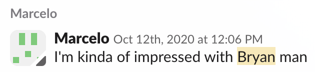
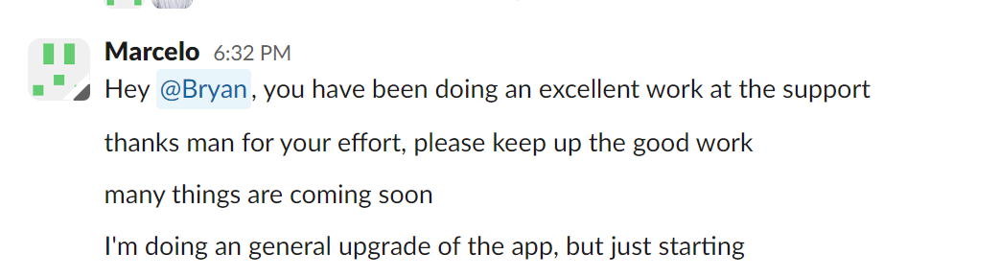
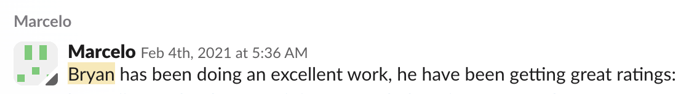
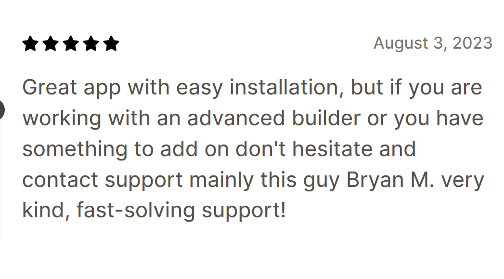
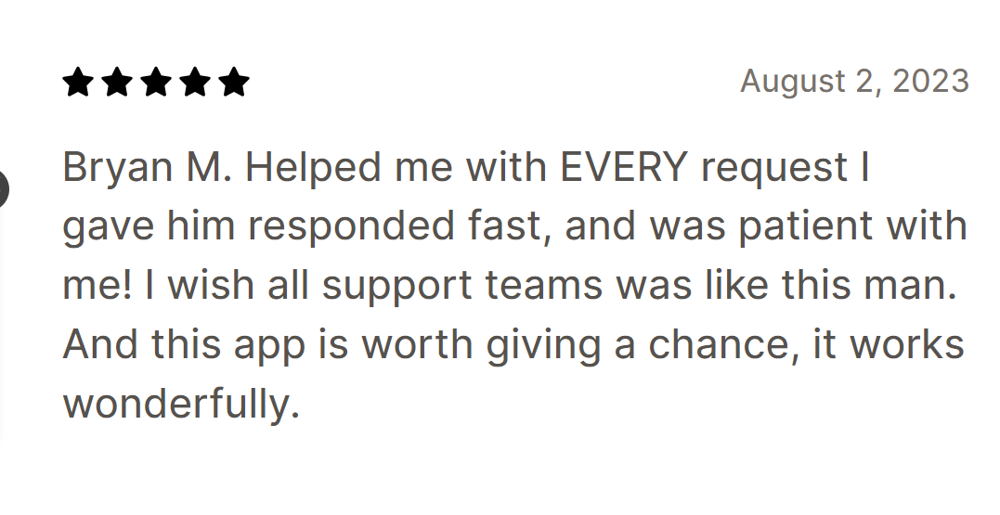
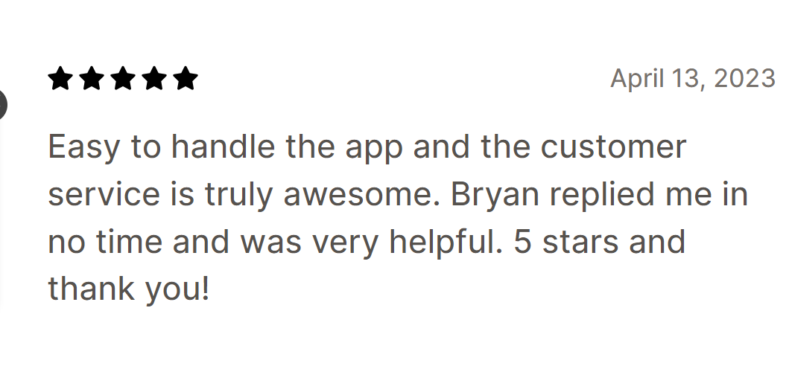
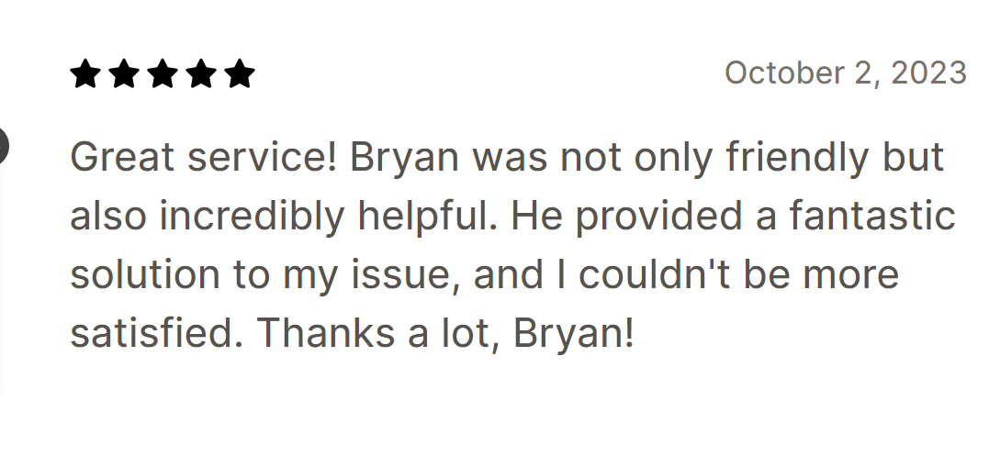
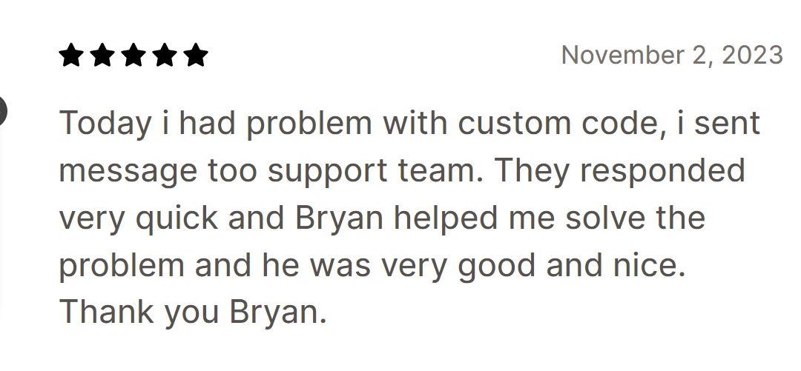
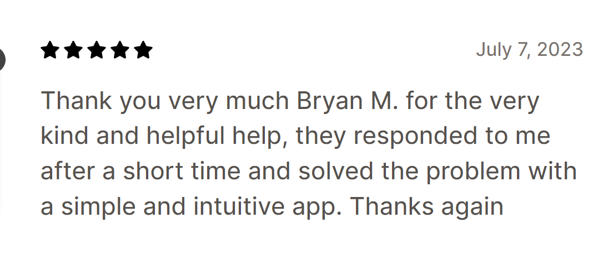

Revy
How a solo Shopify app founder offloaded customer support, added hundreds of 5-star reviews, and got back to building product.

About Revy
Revy is a Shopify app company based in Brazil, founded in 2017 by software engineer Marcelo Olivera. The company builds conversion rate optimization tools for Shopify merchants, with flagship apps including Unlimited Bundles & Discounts and Unlimited Smart UpSell Offers. Both sit at 4.7 and 4.8 stars on the Shopify App Store and serve more than 10,000 merchants.
Revy's apps are known for being clean, code-free, and reliable. Merchants install them, configure bundles or upsells in a few clicks, and start lifting average order value without touching their theme code. The apps have a tight UI, low error rates, and broad compatibility across Shopify themes.
Marcelo built Revy as a solo founder. He led product, engineering, and, for years, customer support. Under his leadership, Revy grew into a known name in the Shopify app ecosystem for merchants who care about conversion. The product worked. The merchant base kept growing. By 2020, the support inbox was where the company's growth was beginning to stall.
That is when Marcelo brought in xFusion.
“Since I hired the xFusion team, I've been very pleased because I don't have to worry anymore about customer support.”
Knowing Jim for a long time, I knew I could trust him and his team to deal with the support of my Shopify Apps. This would allow me to focus more on the core of my business to get more things done. It's been a long time since we started working together and I have no regrets. Customer support is one of our app's strengths and it's praised daily by our customers. If I have any requests, xFusion's response is almost instantly and has always been satisfactory. It's been worth every penny to put the support of my apps in their skilled agent's hands. For anyone wanting to focus more on their business and less on support, I strongly recommend them.
The challenge
Revy ran into the problem that catches a lot of solo technical founders. Marcelo was the engineer who built the apps, the product manager who decided what shipped next, and the support rep who answered every ticket. For a while that worked. Once the merchant base passed a few thousand stores, it stopped working.
The math was simple and brutal. Every hour Marcelo spent in the inbox was an hour he was not writing code, fixing a bug a merchant had just reported, or shipping the next feature. Revy's edge was its product. Revy's product depended on Marcelo's time. The inbox kept eating it.
There was a second layer to the problem. English is Marcelo's second language. He was good enough to answer most tickets, but the small frictions added up. Replies took longer to write. Nuance got lost. Customers felt the gap, even if they could not name it. That gap showed up in the kinds of reviews merchants left, and in the ones they did not bother to leave at all.
Marcelo had also tried to build a support team before. He had hired and managed people directly. The training, retraining, and management ate even more time than answering tickets had. He was a software engineer being asked to be an HR manager, and he did not want to be one. He told Jim Coleman as much in a candid conversation when the two reconnected. Marcelo needed someone else to own the support function end to end. Not just place a person and walk away. Own it.
The solution
xFusion built a setup specific to Revy's situation. Generic outsourced support would not have worked, because Revy's tickets were not generic. Merchants installed apps that touched Liquid, theme code, JavaScript, and Shopify's storefront APIs. Tier-2 questions needed someone who could actually read the code and explain why something was behaving the way it was.
xFusion placed a dedicated full-time team member with technical depth in HTML, CSS, JavaScript, and Shopify Liquid. The placement happened in May 2020. From day one, the agent was responsible for tier-2 technical support, communicating with merchants in clear English, and triaging real bugs into Jira tickets that went straight to Marcelo for engineering work.
The full lifecycle ran on the xFusion side. Recruiting through the TraitX Framework. Training in Revy's product line and Shopify's ecosystem. Payroll, HR, and PTO. Culture and engagement. Performance management through a dedicated account manager who kept the work tight and adjusted as Revy's needs changed. Marcelo did not have to manage any of it.
xFusion also added a layer Revy had not had before: a structured, Shopify-compliant review-request workflow. Every satisfied merchant who finished a successful interaction got asked, the right way, to share their experience on the App Store. That single change turned support from a cost center into a marketing engine. The reviews started coming in. The 5-star count climbed into the hundreds. Revy's ranking moved with it.
The relationship kept evolving. xFusion started capturing and organizing customer feedback into themes Marcelo could use to prioritize the roadmap. What had been a support function became a feedback loop into product. Marcelo got back to engineering, with better data than he had ever had on what merchants wanted next.
Shoutouts to xFusion's team members from Revy's founder



Shoutouts from Revy customers about xFusion's team members






The results
The partnership delivered on every front Marcelo had hoped for, and a few he had not anticipated.
Customer support stopped being a bottleneck. The placed agent handled tier-2 technical work the way Marcelo would have handled it, but in clear English and with the time and patience the inbox actually requires. Merchants got faster, better answers. Marcelo got his calendar back.
The review numbers tell the clearest story. Hundreds of new 5-star reviews landed on the Shopify App Store after xFusion took over support and started running the review-request workflow. Both flagship apps (Unlimited Bundles & Discounts and Unlimited Smart UpSell Offers) climbed in organic ranking, which brought in new merchants without Marcelo touching marketing. The apps' star ratings stabilized at 4.7 and 4.8.
Internal communication became near-instant. Marcelo's quote captures it: when he has a request, xFusion responds almost instantly, and the response has consistently been satisfactory. That is the operating speed of an in-house team, not an outside vendor. The bug pipeline got cleaner too. The placed agent triages incoming reports, separates real bugs from configuration questions, and drops verified issues into Jira with the context Marcelo needs to fix them. Engineering time goes to engineering, not to triage.
The biggest result is the role shift. Marcelo went from being the support rep, the engineer, and the product manager to just being the engineer and the product manager. That is the role he is good at and the role Revy needs him in. The apps have kept improving, the merchant base has kept growing, and the partnership with xFusion has kept running, year after year, since May 2020.
Want to see if we can help you too?
If your customer support is starting to slip, or you are a solo founder drowning in the inbox while your product waits, we can help. We will recruit, vet, place, train, and manage a senior, AI-trained support agent for your business. You will work with them for 30 days before paying anything. If you are not happy, you walk away free.